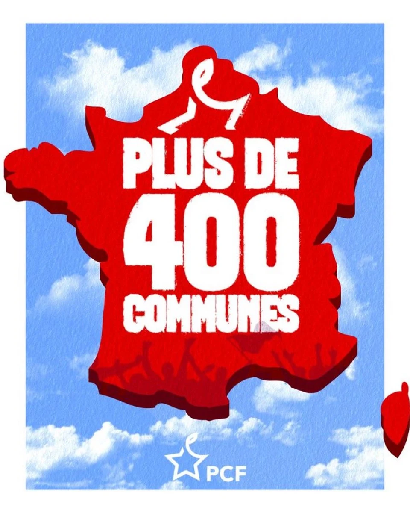

Publication sur X
Services, cantines et eau. Ce que porte le communisme municipal
Date de publication sur X · 28 mars 2026
Repères éditoriaux
Nous avons défendu les services qui répondent aux besoins des habitants. Le bilan électoral figurant dans le visuel reste celui publié par le PCF à l’époque.
Texte de la publication sur X
400 communes. 14 villes de plus de 10 000 habitants.
2,2 millions de Français qui vivent avec un maire communiste.
Deuxième force de gauche en élus.
Les communistes ouvrent des cantines, maintiennent des postes de fonctionnaires et refusent de privatiser l’eau. https://t.co/NTGIGDfzn6

Sources
PCF 79 · @79Parti sur X · AR-0005-TW-2037984134006526368
À lire aussi · À Perpignan, les indemnités des élus en débat
Publications associées
- Le PCF présente son bilan des élections municipales · Bilan des municipales relayé sur Facebook
- Le communisme municipal dans la vie quotidienne · Réponse dans le même fil